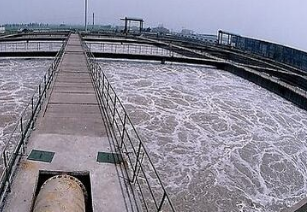
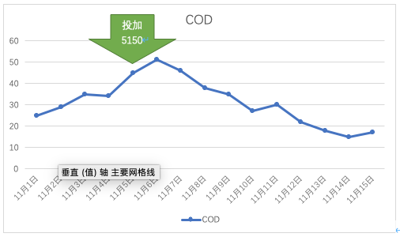

半点科技（苏州）有限公司专业代理诺维信生物增效剂。BioRemove5150是专门设计用于低营养难降解有机物废水处理的菌种。经验证对于各种污水设备均有效。BioRemove5150富含高性能的优选菌种，可以置换掉活性污泥中的丝状菌等低效微生物从而提高单位重量污泥去除COD的能力，提高系统的处理效率。

湖州某特种纸厂有一座日处理能力为400立方米的污水处理厂，包括一个 500立方米的缺氧池和两个400立方米串联的好氧池。处理后的污水直接排放到自然水体中。进水COD大约150PPM，排放的COD要求50PPM以下。实际运行中排放的COD一直在20PPM附近，但从2022年开始出水COD波动加大，并经常超标，进而影响正常排放和生产计划。经过曝气系统改造仍然没有改善。

经过调查分析发现活性污泥的生物相没有指标微生物，活性低，污泥浓度高；因此建议投加诺维信生物增效剂BioRemove515改善污泥的微生物菌群，提高污泥活性和COD去除效率。
此方案开始5天后，系统的COD明显下降并稳定在20PPM以下。出水变清，污泥生物相明显改善。图 1 显示了测试以来COD的显著降低。
